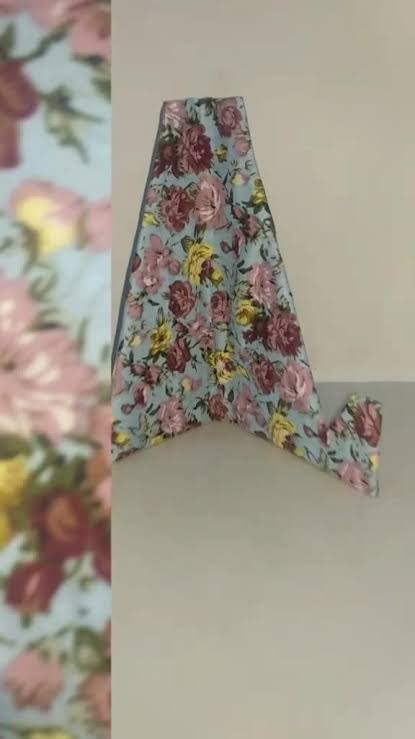
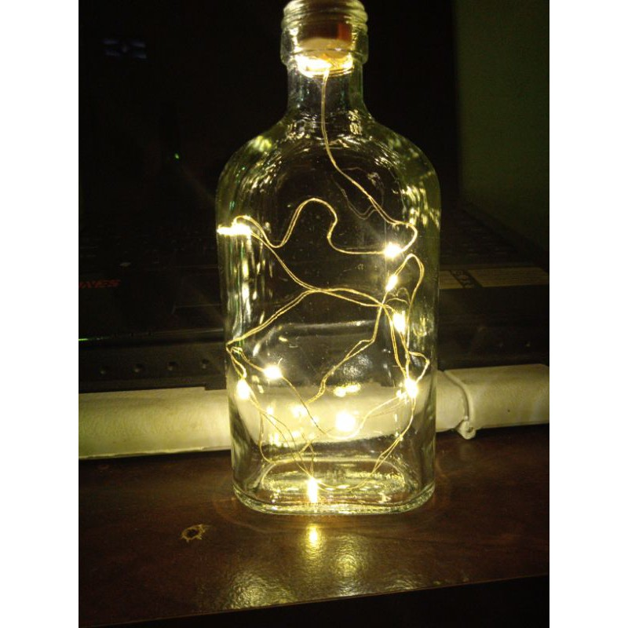
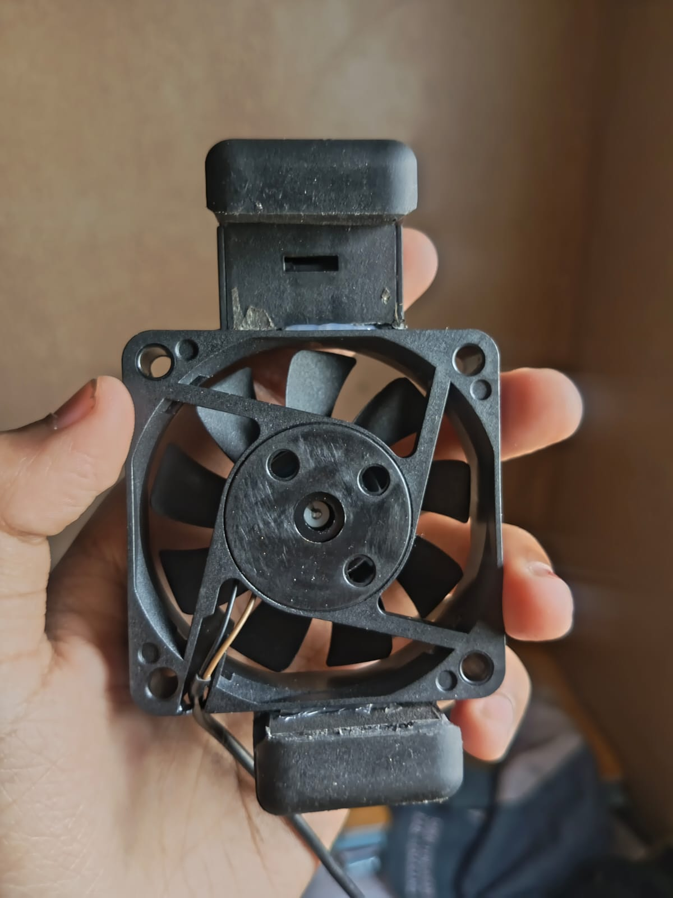

Jam dvd

Ganci Keyboard


Dudukan hp dari Kardus Bekas

Lampu Tidur dari Botol Bekas

Sulap Sampah Menjadi Karya
Bagaimana cara mengolah sampah yang baik dan benar,
serta dapat menghasilkan produk dari limbah 3R.
Website ini menggunakan metode Waterfall.
Pengertian Pengolahan Limbah Pengolahan limbah adalah kegiatan mengelola sampah atau barang yang sudah tidak terpakai agar dampak buruknya terhadap lingkungan dapat dikurangi. Limbah juga dapat dimanfaatkan kembali menjadi barang baru yang memiliki fungsi dan nilai guna. Prinsip 3R (Reduce, Reuse, Recycle). Prinsip 3R merupakan metode pengelolaan sampah yang bertujuan untuk mengurangi jumlah limbah dan menjaga kelestarian lingkungan.
Proyek ini menerapkan konsep upcycling dan ekonomi sirkular sebagai upaya mengurangi limbah melalui pemanfaatan barang bekas. Upcycling merupakan proses mengubah barang yang sudah tidak terpakai menjadi produk baru yang lebih menarik, memiliki fungsi tambahan, dan bernilai jual lebih tinggi. Sementara itu, ekonomi sirkular adalah konsep pemanfaatan barang secara berkelanjutan dengan cara memperpanjang masa pakai produk dan mengurangi sampah. Melalui penerapan kedua konsep tersebut, barang bekas dapat diolah menjadi produk kreatif yang bermanfaat sekaligus membantu menjaga
Limbah Cooling Pad menjadi masalah utama karena merupakan limbah elektronik yang sulit diurai karena terbuat dari plastik dan komponen elektronik. Jumlahnya terus meningkat seiring dengan perkembangan teknologi yang pesat. Proses daur ulangnya yang rumit dan mahal menyebabkan banyak cooling pad dibuang sembarangan, mencemari tanah dan air.
Perkembangan teknologi yang sangat cepat membuat perangkat elektronik, termasuk komputer dan laptop, sering kali rusak dalam waktu singkat. Salah satu komponen yang paling sering dibuang begitu saja adalah cooling pad bekas. Banyak orang mengira cooling pad yang sudah rusak adalah barang rongsokan yang tidak memiliki nilai guna, sehingga berakhir menumpuk di tempat pembuangan sampah dan menjadi limbah elektronik yang sulit diurai oleh alam.
Laptop yang cepat panas menjadi masalah utama karena dapat menurunkan performa dan memperpendek umur perangkat. Di sisi lain, limbah cooling pad bekas terus menumpuk karena dianggap sudah tidak dapat digunakan lagi. Padahal, kipas di dalam cooling pad bekas tersebut umumnya masih berfungsi dengan baik dan hanya rangka plastiknya saja yang rusak, sehingga jika dibuang begitu saja akan menjadi limbah elektronik yang sulit diurai.
Kipas pada cooling pad bekas yang masih berfungsi dapat dimanfaatkan kembali menjadi fan cooler yang lebih praktis dan hemat biaya. Dengan menggunakan kembali kipas bekas tersebut, kita tidak hanya mengurangi jumlah limbah elektronik, tetapi juga menciptakan produk yang bermanfaat untuk mendinginkan laptop. Hal ini sejalan dengan prinsip 3R, yaitu Reduce, Reuse, dan Recycle, karena barang yang dianggap sampah dapat diubah menjadi produk baru yang memiliki nilai guna.
Produk-Produk Kolaboratif Mata Pelajaran Ipas.




Misalkan:
x = Harga 1 Tempat Surat dan Dokumen dari Casing Komputer Bekas
y = Harga 1 Lampu Hias
Eliminasi
x + 2y = 100.000 | ×1 → x + 2y= 100.000
2x + y = 80.000 | ×2 → 4x + 2y= 160.000
_____________________________ _
x=20.000
Substitusi
2x+y=80.000
2.(20.000)+y=80.000
40.000+y=80.000
y=80.000-40.000
y=40.000
Kesimpulan
Jadi harga 1 pcs Tempat surat adalah Rp 20.000 dan harga 1 pcs lampu hias adalah Rp 40.000

Misalkan:
x = Harga 1 jam dinding
y = Harga 1 lampu hias
Eliminasi
2x + y = 128.000 | ×2 → 4x + 2y= 256.000
3x + 2y = 206.000 | ×1 → 3x + 2y= 206.000
_____________________________ _
x=50.000
Substitusi
2x+y=128.000
2.(50.000)+y=128.000
100.000+y=128.000
y=128.000-100.000
y=28.000
Kesimpulan
Jadi harga 1 pcs jam dinding adalah Rp 50.000 dan harga 1 pcs lampu hias adalah Rp 28.000

Misalkan:
x = Harga 1 Kipas
y = Harga 1 Ganci
Eliminasi
x + 3y = 90.000 | ×2 → 2x + 6y= 180.000
2x + 4y = 150.000 | ×1 → 2x + 4y= 150.000
_____________________________ _
y=15.000
Substitusi
x+3y=90.000
x.3.(15.000)=90.000
x+45.000=90.000
x=90.000-45.000
x=45.000
Kesimpulan
Jadi harga 1 pcs kipas adalah Rp 45.000 dan harga 1 pcs ganci adalah Rp 15.000
Di era digital, penggunaan ponsel dalam waktu lama sering menyebabkan perangkat menjadi panas. Untuk mengatasi hal tersebut, diperlukan alat tambahan berupa fan cooler HP. Saat ini fan cooler dapat dibuat secara kreatif dengan memanfaatkan limbah elektronik, salah satunya adalah cooling pad laptop bekas yang sudah tidak terpakai lagi. Meskipun sudah tidak digunakan, beberapa komponen di dalamnya masih berfungsi dengan baik dan dapat diolah kembali menjadi produk baru yang lebih bermanfaat melalui metode upcycling.
Dari hasil pengamatan, alat pendingin ini memiliki desain yang simpel, ringan, dan mudah dibawa. Warna hitam mendominasi pada bagian kipas dan rangkanya. Adapun bagian-bagian utama dari alat ini meliputi kipas sebagai penghasil angin, rangka sebagai pelindung dan penahan posisi kipas, dinamo kecil sebagai penggerak putaran kipas, kabel USB sebagai penghantar listrik, dan penjepit atau dudukan yang berfungsi untuk menempelkan alat pada ponsel. Semua komponen tersebut diambil dari cooling pad bekas yang masih layak pakai.
Fungsi utama dari alat ini adalah untuk menjaga suhu ponsel agar tetap stabil dan tidak cepat panas saat digunakan untuk bermain game atau menonton video dalam durasi lama. Untuk proses pembuatannya, pertama-tama cooling pad laptop bekas dibongkar untuk mengambil bagian kipasnya. Kemudian kipas dibersihkan dari debu dan diperiksa kelayakan mesinnya. Setelah dipastikan masih menyala, kipas dipasangkan kembali dengan rangka, diberi kabel USB, dan ditambahkan dudukan agar bisa terpasang di belakang HP. Manfaat dari pembuatan produk ini adalah dapat mengurangi jumlah sampah elektronik, menghemat pengeluaran karena tidak perlu membeli baru, dan melatih kreativitas untuk menciptakan barang berguna dari limbah.
Dari observasi yang telah dilakukan, dapat disimpulkan bahwa limbah cooling pad laptop bekas dapat disulap menjadi fan cooler HP yang fungsional dan bernilai guna. Produk ini menjadi bukti bahwa barang yang dianggap sudah tidak berguna ternyata masih bisa dimanfaatkan kembali. Dengan melakukan daur ulang kreatif seperti ini, kita turut berkontribusi dalam menjaga lingkungan dari bahaya limbah elektronik serta menumbuhkan sikap peduli dan kreatif dalam memanfaatkan barang bekas.
Teks Ini di buat oleh Adelia Pratiwi
Sampah elektronik adalah salah satu masalah lingkungan yang disebabkan oleh perkembangan teknologi yang pesat. Kipas cooler bekas dari laptop atau komputer sering dibuang ketika rusak atau sudah tidak dibutuhkan lagi. Namun, kipas tersebut masih mengandung komponen yang masih bisa digunakan kembali. Salah satu cara kreatif untuk mengelola sampah ini adalah dengan mengubah kipas cooler bekas menjadi fan cooler HP. Perubahan ini menunjukkan bagaimana sampah elektronik dapat menjadi produk yang berguna dan bernilai.
Transformasi dimulai ketika kipas cooler bekas dikumpulkan dan dipisahkan menjadi komponen-komponennya. Dinamo dan kabelnya dilepas dari rangka utama dan diperiksa untuk memastikan masih berfungsi. Komponen-komponen tersebut kemudian dibersihkan untuk menghilangkan debu dan kotoran. Pada tahap ini, fungsi asli dari kipas cooler berubah. Jika sebelumnya digunakan untuk mendinginkan laptop, kini menjadi bahan utama untuk produk baru.
Dinamo yang sudah dibersihkan digabungkan dengan kabel USB dan penjepit HP untuk menciptakan sebuah benda baru. Melalui proses perakitan dan penyambungan, bagian-bagian tersebut membentuk sebuah fan cooler portabel. Dinamo dipasang pada penjepit agar anginnya bisa langsung mengenai bagian belakang HP. Kabel USB dipasang sebagai sumber tenaga. Setelah semua komponen terpasang dengan kuat menggunakan obeng dan sambungannya diuji, bagian-bagian yang terpisah tersebut menjadi satu produk fungsional yang utuh.
Hasilnya, kipas cooler bekas berubah menjadi fan cooler HP yang memiliki nilai fungsional dan ekonomi. Produk ini dapat digunakan untuk mendinginkan HP saat bermain game atau saat di-charge, sehingga mencegah HP menjadi panas berlebih. Transformasi ini mengurangi jumlah sampah elektronik dan mendorong pemanfaatan kembali barang yang ada. Dengan biaya produksi hanya Rp. 25.000 dan harga jual Rp. 35.000, produk ini menghasilkan keuntungan Rp. 10.000 per unit. Oleh karena itu, mendaur ulang kipas cooler bekas menjadi cooler HP adalah cara inovatif untuk mendukung lingkungan yang lebih berkelanjutan.
Teks Ini Dibuat Oleh Ata Jali Ramadhani
Fan cooler HP merupakan perangkat elektronik tambahan yang berfungsi membantu mengurangi panas pada telepon genggam. Produk ini dibuat dengan memanfaatkan limbah elektronik berupa cooling pad laptop bekas yang sudah tidak digunakan. Pembuatan alat ini merupakan salah satu bentuk upcycling, yaitu proses mengolah barang bekas menjadi produk baru yang memiliki fungsi dan nilai guna. Dengan memanfaatkan kembali komponen yang masih layak pakai, limbah elektronik dapat dikurangi sekaligus menghasilkan barang yang bermanfaat.
Berdasarkan hasil pengamatan, fan cooler HP memiliki bentuk persegi dengan warna hitam. Alat ini terdiri atas beberapa bagian utama, yaitu:
- Kipas pendingin: Berfungsi menghasilkan aliran udara untuk membantu mengurangi panas pada ponsel.
- Rangka pelindung: Berfungsi melindungi kipas dan menjaga komponen tetap berada pada posisinya.
- Motor penggerak: Berfungsi menggerakkan bilah kipas agar dapat berputar.
- Kabel USB: Berfungsi menyalurkan energi listrik dari sumber daya agar kipas dapat bekerja.
- Dudukan: Berfungsi membantu memasang dan menempatkan fan cooler pada bagian belakang ponsel.
Sebagian besar komponen utama alat ini berasal dari cooling pad laptop bekas yang dimanfaatkan kembali.
Fan cooler HP berfungsi membantu mengurangi panas pada bagian belakang ponsel, terutama ketika digunakan untuk bermain game atau menjalankan aplikasi yang membutuhkan kinerja tinggi.
Proses pembuatannya dimulai dengan menyiapkan cooling pad laptop bekas. Selanjutnya, komponen kipas dipisahkan dan diperiksa untuk memastikan masih dapat digunakan. Setelah itu, kipas dirangkai kembali dengan rangka pelindung, kabel USB, dan dudukan agar dapat digunakan sebagai pendingin ponsel.
Alat ini memiliki beberapa manfaat, seperti mengurangi limbah elektronik, memanfaatkan kembali barang bekas, menghemat biaya pembuatan, serta meningkatkan kreativitas dalam mengolah barang yang sudah tidak terpakai menjadi produk baru.
Berdasarkan hasil observasi, fan cooler HP merupakan produk hasil pemanfaatan limbah cooling pad laptop bekas yang diolah menjadi alat pendingin ponsel. Produk ini membuktikan bahwa barang bekas yang masih memiliki komponen layak pakai dapat dimanfaatkan kembali menjadi sesuatu yang berguna.
Melalui kegiatan upcycling, kita dapat mengurangi limbah elektronik sekaligus menciptakan produk yang memiliki nilai manfaat. Oleh karena itu, pembuatan fan cooler HP menjadi salah satu contoh nyata kreativitas dalam mendukung kepedulian terhadap lingkungan.
Teks ini di buat oleh Nirmala Lailatul Ramadhani
"Adelia Pratiwi"
Electronic waste is one of the environmental problems caused by the large amount of unused electronic components. Used cooler fans from old computers or laptops are often thrown away when they are damaged or no longer used. However, these fans still contain components that can function well. One creative way to manage this waste is by transforming used cooler fans into an HP fan cooler. This transformation shows how electronic waste can become a useful and valuable product.
The transformation begins when an unused cooler fan is separated from the old computer device. The fan is cleaned to remove dust and dirt, and its cables and connectors are checked to ensure they still work. At this stage, the original function of the cooler fan changes. Instead of cooling computer components, it will be used to cool a mobile phone.
The cleaned cooler fan is then combined with a protective frame and a supporting base to create a portable HP fan cooler. A USB cable is connected to provide electrical power to the fan. After all the components are properly attached, the fan can rotate and produce airflow. The finished product is now ready to help reduce the temperature of a mobile phone during use.
As a result, a used cooler fan is transformed into an HP fan cooler that has both functional and economic value. The product can be used to prevent the mobile phone from overheating while also serving as a creative accessory. This transformation reduces the amount of electronic waste and encourages the reuse of available materials. Therefore, recycling computer components into mobile phone accessories is one way to support a more sustainable environment
"Ata Jali Ramadhani"
Electronic waste is one of the environmental problems caused by the rapid development of technology. Used cooler fans from laptops or computers are often discarded when they are damaged or no longer needed. However, these fans still contain components that can be reused. One creative way to manage this waste is by transforming a used cooler fan into an HP fan cooler. This transformation shows how electronic waste can become a useful and valuable product.
The transformation begins when a used cooler fan is collected and separated into its individual components. Its dynamo and cable are removed from the main frame and checked to ensure they still work. The components are then cleaned to remove dust and dirt. At this stage, the original function of the cooler fan changes. Instead of being used to cool a laptop, it becomes the main material for a new product.
The cleaned dynamo is combined with a USB cable and a phone clip to create a new object. Through the process of assembling and connecting, the individual parts form a portable fan cooler. The dynamo is attached to the clip holder so that the wind can directly reach the back of the phone. The USB cable is installed as a power source. Once the components are firmly attached using a screwdriver and the connection is tested, the separate parts become one complete functional product.
As a result, a used cooler fan is transformed into an HP fan cooler that has both functional and economic value. The product can be used to cool a phone while gaming or charging, preventing overheating. This transformation reduces the amount of electronic waste and encourages the reuse of available materials. With a production cost of Rp. 25,000 and a selling price of Rp. 35,000, it provides a profit of Rp. 10,000 per unit. Therefore, recycling used cooler fans into a phone cooler is an innovative way to support a more sustainable environment.
"Nirmala Lailatul Ramadhani"
Electronic waste is one of the environmental problems caused by the rapid development of technology. Used cooler fans from laptops or computers are often discarded when they are damaged or no longer needed. However, these fans still contain components that can be reused. One creative way to manage this waste is by transforming a used cooler fan into an HP fan cooler. This transformation shows how electronic waste can become a useful and valuable product.
The transformation begins when an unused cooler fan is separated from its original device. The fan is cleaned to remove dust and dirt that may affect its performance. Its blades, frame, and USB cable are also checked to make sure they are still in good condition. After that, the fan is prepared for reuse as a cooling device for mobile phones.
The cleaned cooler fan is then combined with a protective frame and a supporting base to create a portable HP fan cooler. A USB cable is connected to provide electrical power to the fan. After all the components are properly attached, the fan can rotate and produce airflow. The finished product is now ready to help reduce the temperature of a mobile phone during use.
As a result, an old cooler fan is transformed into a useful HP fan cooler. This product helps reduce heat from mobile phones, especially when playing games or using applications for a long time. By reusing old electronic components, we can reduce electronic waste and create products with new functions. Therefore, transforming used cooler fans into useful devices is one way to support a cleaner and more sustainable environment.